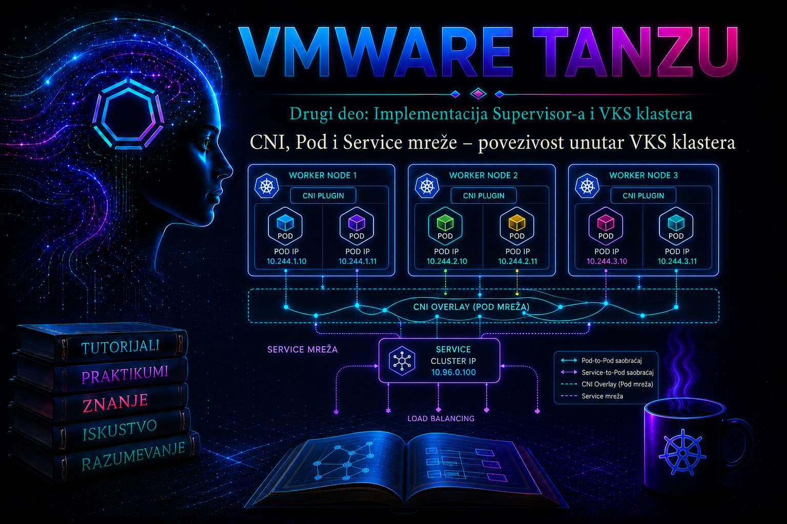

VMware & Tanzu

Prethodna lekcija razdvojila je mrežni model Supervisor-a, VKS klastera i infrastrukturnih segmenata. Ova lekcija ulazi u sam VKS klaster i prati put paketa od mrežnog namespace-a izvornog Poda, preko CNI dataplane-a, do odredišnog Poda ili stabilne virtuelne adrese Kubernetes Service objekta. Cilj nije pamćenje pojedinačnih pravila na node-u, već sposobnost da se povežu deklarativni Kubernetes objekti sa stvarnim interfejsima, rutama, endpoint-ima, DNS zapisima i bezbednosnim pravilima koja odlučuju da li će komunikacija uspeti.
Termin VKS u ovoj lekciji označava vSphere Kubernetes Service workload klaster. Starija dokumentacija i operativni zapisi mogu koristiti nazive Tanzu Kubernetes Grid Service, TKGS ili Tanzu Kubernetes Cluster. Nazivi API-ja, sistemskih namespace-ova i podržanih CNI varijanti razlikuju se između vSphere/VCF izdanja i Kubernetes release-a. Zato administrator pre svake promene proverava tačnu matricu podrške za konkretan Supervisor, VKS release i CNI paket; postupak iz druge verzije ne prenosi se automatski u aktivno okruženje.
Mrežni ugovor Kubernetes-a i uloga CNI-ja
Kubernetes mrežni model polazi od nekoliko zahteva: svaki Pod dobija sopstveni mrežni identitet; kontejneri u istom Podu dele mrežni namespace i komuniciraju preko localhost; Podovi treba da komuniciraju međusobno bez ručnog prevođenja adresa na aplikacionom nivou; a servisi obezbeđuju stabilno otkrivanje promenljivih backend Podova. Kubernetes API opisuje željeno stanje, ali sam ne kreira virtuelne interfejse niti programira kompletan dataplane. Taj posao obavljaju mrežni dodatak i node komponente.
Container Network Interface (CNI) je specifikacija i skup plug-in poziva koje runtime koristi pri pripremi i uklanjanju mreže kontejnerskog sandbox-a. Kada kubelet preko CRI-ja zatraži kreiranje Pod sandbox-a, runtime poziva konfigurisan CNI. CNI tipično kreira par virtuelnih interfejsa, jedan kraj postavlja u Pod namespace, dodeljuje adresu preko IPAM mehanizma, dodaje rute i programira potrebni host dataplane. Tek posle uspešnog mrežnog koraka Pod može preći u funkcionalno stanje. Poruka NetworkPluginNotReady ili događaj FailedCreatePodSandBox zato nije aplikaciona greška: node ili CNI nije uspeo da obezbedi mrežni preduslov.
U VKS okruženjima Antrea je česta i platformom integrisana CNI implementacija, dok podržani izbor može zavisiti od izdanja i modela klastera. Antrea koristi Open vSwitch na node-u i antrea-agent za programiranje dataplane-a; antrea-controller prati Kubernetes objekte i distribuira stanje potrebno za politike i druge funkcije. Ne treba zaključiti da svaki VKS klaster koristi istu CNI verziju, isti encapsulation režim ili isti Service proxy. Istina se utvrđuje iz deklaracije klastera, instaliranog paketa i aktivne konfiguracije, a ne iz pretpostavke zasnovane na nazivu proizvoda.
| Sloj | Primarni objekti ili komponente | Šta administrator dokazuje |
|---|---|---|
| Deklarativni control plane | Pod, Service, EndpointSlice, NetworkPolicy, CoreDNS konfiguracija | Objekti postoje, selektori i portovi su tačni, endpoint-i su spremni, politika dozvoljava nameravani tok. |
| Node mreža | kubelet, container runtime, CNI konfiguracija i binarni plug-in | Node je Ready, CNI uslov je inicijalizovan, Pod sandbox dobija interfejs, adresu i rute. |
| Dataplane | Antrea Agent/OVS ili drugi podržani CNI; kube-proxy ili integrisani Service proxy | Tok paketa prati očekivani overlay ili routed put, Service VIP se prevodi ka zdravom endpoint-u, nema neočekivanog drop-a. |
| Otkrivanje servisa | CoreDNS, Service DNS zapis, search domeni | Ime se razrešava iz odgovarajućeg namespace-a; DNS odgovor se ne meša sa dokazom da backend radi. |
| Aplikacioni sloj | Proces, socket, readiness i aplikacioni protokol | Proces sluša na očekivanom interfejsu i portu i vraća ispravan protokolski odgovor. |
Pod mreža: namespace, interfejs, IPAM i put paketa
Svi regularni kontejneri u Podu dele isti mrežni namespace, Pod IP i skup portova. Zbog toga se pomoćni kontejner obraća glavnom procesu preko localhost, a dva kontejnera u istom Podu ne mogu istovremeno da slušaju na istom IP/protokol/port paru. Polje containerPort dokumentuje port i može dati ime koje Service koristi kao targetPort, ali samo po sebi ne otvara firewall niti pokreće proces. Aplikacija mora stvarno da sluša, obično na svim odgovarajućim Pod interfejsima, a ne samo na 127.0.0.1.
IPAM dodeljuje Pod adresu iz predviđenog Pod CIDR prostora. Način raspodele — blokovi po node-u, centralni pool ili platformom upravljani routed opseg — zavisi od CNI-ja i VKS modela. Pod CIDR, Service CIDR, node mreže, Supervisor workload mreže, VPN i korporativni opsezi ne smeju se preklapati. Preklapanje može izazvati asimetrično rutiranje i selektivne kvarove koje je teško razlikovati od NetworkPolicy problema. Opsezi se zato projektuju pre kreiranja klastera; njihova promena kasnije nije obična aplikaciona korekcija i često zahteva novi klaster ili proizvođački podržan migracioni postupak.
Kod overlay modela paket između Podova na različitim node-ovima ulazi u CNI dataplane izvornog node-a, enkapsulira se kroz transportnu node mrežu, stiže do odredišnog node-a i dekapsulira se ka ciljnom Podu. Kod routed modela Pod prefiksi su poznati fizičkoj ili NSX mreži i paket se usmerava bez istog overlay obrasca. Režim utiče na MTU, vidljivost adresa, firewall pravila i performanse. Ako je Pod MTU veći od efektivnog puta posle encapsulation overhead-a, mali paketi mogu prolaziti dok veći zahtevi zastaju. To je karakterističan signal za MTU/PMTUD proveru, a ne razlog da se odmah menja Service.
Pod IP je prolazan identitet. Zamena Poda najčešće donosi novi UID i novu IP adresu; aplikacije zato ne čuvaju Pod adrese kao trajnu konfiguraciju. Izuzeci kao headless Service i određeni stateful protokoli i dalje koriste kontrolisano otkrivanje članova, ne ručno održavan spisak adresa. Za uobičajenu mikroservisnu komunikaciju koristi se DNS ime Service-a.
Service mreža: virtuelna adresa, portovi i EndpointSlice
Service tipa ClusterIP daje stabilnu virtuelnu adresu i DNS ime skupu promenljivih backend Podova. Service sa selektorom ne bira Podove prema nazivu Deployment-a, već prema labelama. Control plane na osnovu selektora održava EndpointSlice objekte. Spreman endpoint predstavlja adresu Poda koja može da primi redovan saobraćaj; Pod koji je Running, ali nije Ready, obično se ne koristi kao spreman backend.
port je port Service-a, a targetPort port aplikacije. Imenovani targetPort smanjuje vezivanje Service-a za konkretan broj porta, ali naziv mora postojati u Pod template-u. Service sa ispravnom ClusterIP adresom može biti potpuno neupotrebljiv ako selektor ne odgovara labelama, ako EndpointSlice nema spremne adrese, ako je targetPort pogrešan ili proces sluša samo na loopback interfejsu.
| Oblik Service-a | Namena | Granica i rizik |
|---|---|---|
ClusterIP |
Stabilan interni VIP i DNS ime. | Ne predstavlja spoljašnji ulaz niti bezbednosnu politiku. |
Headless, clusterIP: None |
Direktno otkrivanje članova, često uz StatefulSet. | Klijent preuzima izbor endpoint-a i obradu njihovih promena. |
NodePort |
Port na node adresama, često kao tehnički građevni blok. | Povećava izloženu površinu; nije podrazumevani enterprise ulaz. |
LoadBalancer |
Zahtev platformskom kontroleru za spoljnim load balancer-om. | Zavisi od integracije, IP pool-a i politika; detaljno se obrađuje u narednim lekcijama. |
ExternalName |
DNS CNAME ka spoljašnjem imenu. | Nema klasični proxy dataplane; mogući su TLS i aplikacioni problemi zbog imena. |
Service dataplane može realizovati kube-proxy u podržanom režimu ili CNI-integrisana proxy funkcija, na primer AntreaProxy. Administrator ne sme ručno da popravlja iptables, IPVS, OVS flow ili eBPF stanje bez potvrde stvarne implementacije i proizvođačkog postupka. Ta pravila su izvedeno stanje koje kontroleri mogu ponovo programirati; ručna izmena skriva uzrok i može nestati pri reconciliation-u ili restartu node-a.
Service raspodeljuje konekcije ili tokove, ne garantuje strogo ravnomernu raspodelu svakog HTTP zahteva. HTTP keep-alive, HTTP/2, gRPC i dugotrajne TCP sesije mogu zadržati više rada na jednom backend-u. sessionAffinity: ClientIP, internalTrafficPolicy: Local i topology-aware routing menjaju izbor endpoint-a i koriste se tek posle merenja. Sa internalTrafficPolicy: Local, node bez lokalnog spremnog endpoint-a nema rezervni udaljeni backend, što može postati prekid dostupnosti tokom drain-a ili neravnomernog raspoređivanja.
DNS za Podove i Service objekte
Kubernetes DNS objavljuje zapise za Service objekte, a kubelet podešava /etc/resolv.conf u Podu prema dnsPolicy i cluster domenu. Iz istog namespace-a dovoljan je kratak naziv, na primer api; iz drugog se koristi api.produkcija, a potpuno kvalifikovano ime tipično ima oblik api.produkcija.svc.<cluster-domain>. Ne treba hardkodovati cluster.local bez provere, jer domen može biti drugačiji.
Uspešno DNS razrešavanje dokazuje samo da ime postoji. Ne dokazuje da Service ima endpoint-e, da politika propušta saobraćaj niti da aplikacija odgovara. Obrnuto, direktan uspešan poziv Pod IP adrese uz neuspešan Service poziv sužava problem na Service selektor/port ili Service dataplane; uspešan Service IP uz neuspešno ime usmerava istragu na DNS.
NetworkPolicy i bezbednosne granice
Kubernetes mreža je često inicijalno otvorena između Podova. NetworkPolicy uvodi L3/L4 pravila samo ako ih aktivni CNI sprovodi. Service nije firewall: postojanje ClusterIP adrese ne daje niti oduzima dozvolu. Politike biraju Podove label selektorima, a ingress i egress izolacija nastaju kada odgovarajuća politika izabere Pod. Pravila su aditivna; saobraćaj mora biti dozvoljen i na egress strani izvora i na ingress strani odredišta kada su obe strane izolovane.
Produkcioni obrazac je dokumentovan default-deny, zatim eksplicitno dozvoljeni DNS i poslovni tokovi. Primena default-deny bez prethodnog inventara može prekinuti DNS, monitoring, image/secret zavisnosti i administrativne provere. Politika treba da cilja stabilne aplikacione labele, a ne prolazna imena Podova. Standardni NetworkPolicy ne pruža L7 HTTP autorizaciju, TLS identitet niti automatsku enkripciju; ti zahtevi pripadaju dodatnim platformskim ili aplikacionim kontrolama.
Projektovanje za dostupnost, performanse i oporavak
- Dostupnost: najmanje dve replike, readiness probe, PodDisruptionBudget i raspored preko node-ova/zona sprečavaju da Service ostane bez endpoint-a tokom održavanja. PDB ne štiti od svih dobrovoljnih i prinudnih kvarova i nije zamena za kapacitet.
- Kapacitet: broj Pod adresa i Service adresa planira se sa rezervom za rollout surge, sistemske Podove i rast node pool-a. Iscrpljen IPAM pool sprečava kreiranje novih Podova i može blokirati upgrade.
- Performanse: meri se aplikaciona latencija zajedno sa retransmisijama, drop-ovima, MTU-om i međunode putem. Tuning offload-a, OVS-a ili encapsulation režima radi se samo prema podržanoj Broadcom/Antrea proceduri.
- Bezbednost: namespace nije sam po sebi mrežna granica. NetworkPolicy, RBAC nad njenim izmenama, TLS i aplikaciona autentikacija moraju činiti jednu kontrolu.
- Oporavak: CNI i Service stanje uglavnom se rekonstruišu iz deklarativne konfiguracije. Čuvaju se manifesti, vrednosti klastera i politike; pre intervencije prikupljaju se događaji i logovi jer su vremenski ograničeni.
Sistematična dijagnostika mrežnog incidenta
Dijagnostika ide od najmanje invazivnog ka dubljem sloju: potvrditi kontekst i vreme incidenta; odrediti da li je pogođen jedan Pod, Service, node, namespace ili ceo klaster; proveriti objekte i endpoint-e; testirati DNS, direktan Pod put i Service put; pregledati NetworkPolicy; zatim CNI i node stanje. Tek kada dokazi pokažu node/dataplane uzrok pristupa se platformskim logovima ili antctl alatima. Restart sistemskih Podova pre prikupljanja dokaza može privremeno sakriti kvar i otežati RCA.
| Simptom | Prvi dokaz | Verovatna grana | Bezbedna korekcija |
|---|---|---|---|
Novi Pod ostaje ContainerCreating |
Događaji Poda i node uslovi | FailedCreatePodSandBox, CNI/IPAM ili runtime |
Otkloniti potvrđenu platformsku zavisnost; ne brisati node naslepo. |
| Service ima DNS, ali nema odgovor | Service, EndpointSlice i readiness | Selektor, targetPort, nespremni backend-i |
Vratiti odobren manifest selektora/porta ili popraviti readiness uzrok. |
| Pod IP radi, Service IP ne radi | Uporedni test iz istog klijentskog Poda | Service dataplane ili pogrešan Service port | Eskalirati sa dokazima; ne menjati izvedena node pravila ručno. |
| DNS ne radi za više Service-a | resolv.conf, DNS Service/Podovi i logovi |
CoreDNS, upstream DNS ili egress politika za port 53 | Vratiti DNS dozvolu ili podržanu konfiguraciju; potvrditi UDP i TCP 53. |
| Samo međunode veliki paketi zastaju | Poređenje lokalnog/međunode toka i kontrolisani MTU test | MTU, fragmentacija ili transportna mreža | Uskladiti MTU prema podržanom dizajnu na svim slojevima. |
| Samo jedan node pokazuje mrežne kvarove | Raspored pogođenih Podova i Antrea Agent stanje | Node CNI/OVS, NIC, ruta ili resursni pritisak | Cordon/drain samo uz odobrenje, PDB i dovoljan kapacitet; zatim proizvođačka sanacija. |
Osnovni read-only paket dokaza izvršava se sa nalogom koji ima pravo čitanja u ciljnom namespace-u i sistemskim namespace-ovima samo kada je to odobreno:
kubectl config current-context
kubectl cluster-info
kubectl get nodes -o wide
kubectl get pods -n <namespace> -o wide
kubectl get service,endpointslice -n <namespace>
kubectl get networkpolicy -n <namespace>
kubectl get events -n <namespace> --sort-by=.metadata.creationTimestamp
kubectl describe pod <pod> -n <namespace>
kubectl logs <pod> -n <namespace> --all-containers --since=30m --timestamps
Ako je potvrđeno da klaster koristi Antrea i RBAC dozvoljava pregled, proveravaju se sistemski Podovi i logovi iz stvarnog namespace-a u toj verziji. Namespace se ne pretpostavlja; pronalazi se labelama ili nazivom. antctl, Traceflow i dump OVS tokova predstavljaju napredni nivo i mogu izložiti mrežne metapodatke. Koriste se samo sa kompatibilnim alatom i prema dokumentaciji instalirane Antrea verzije.
kubectl get pods -A -o wide | grep -i antrea
kubectl get daemonset -A | grep -i antrea
kubectl logs -n <antrea-namespace> daemonset/antrea-agent \
--since=30m --prefix --tail=300Integrisani praktikum: Pod-to-Pod, Service, DNS i NetworkPolicy
Kontekst i cilj. Platformski tim validira internu API putanju u VKS klasteru pre uvođenja strožih mrežnih politika. Vežba kreira dve replike web servera, ClusterIP Service i namenski klijentski Pod; dokazuje Pod-to-Pod, Pod-to-Service i DNS tok, uvodi kontrolisani kvar selektora, zatim default-deny i eksplicitnu dozvolu. Svi state-changing koraci ograničeni su na namespace tashizza-net-lab.
Preduslovi i rizik. Potrebni su kompatibilan kubectl, važeći VKS kubeconfig, pravo za Deployment, Pod, Service, ConfigMap i NetworkPolicy u laboratorijskom namespace-u, kao i odobreni image-i dostupni klasteru. Kreiranje i brisanje namespace-a može zahtevati platformskog administratora. Primeri image tagova služe laboratoriji; produkcija koristi interni registry i nepromenljivi digest. Pre primene NetworkPolicy mora biti potvrđeno da CNI sprovodi standardni Kubernetes NetworkPolicy.
-
Potvrditi identitet, opseg i ovlašćenja. Sledeće komande samo čitaju stanje.
kubectl config current-context kubectl auth whoami kubectl get nodes kubectl auth can-i create namespaces kubectl auth can-i create deployments.apps -n tashizza-net-lab kubectl auth can-i create services -n tashizza-net-lab kubectl auth can-i create networkpolicies.networking.k8s.io -n tashizza-net-labValidacija: kontekst mora biti odobreni laboratorijski VKS klaster, node-ovi
Ready, a prava usklađena sa planom. Ako namespace unapred daje platform tim, ne zahteva se pravocreate namespaces. -
Kreirati izolovan namespace. Ovo menja stanje. Ako namespace već postoji, prvo proveriti vlasništvo i ne prepisivati ga.
kubectl create namespace tashizza-net-lab kubectl label namespace tashizza-net-lab \ environment=lab owner=platform-teamValidacija:
kubectl get namespace tashizza-net-lab --show-labelsprikazuje statusActivei obe labele. -
Primeniti serverski validiran manifest. Deployment koristi dve replike, readiness i ClusterIP Service. NetworkPolicy još nije uključena kako bi se najpre dokazalo osnovno mrežno stanje.
apiVersion: apps/v1 kind: Deployment metadata: name: web namespace: tashizza-net-lab spec: replicas: 2 selector: matchLabels: app: web template: metadata: labels: app: web spec: automountServiceAccountToken: false containers: - name: web image: nginxinc/nginx-unprivileged:1.27-alpine ports: - name: http containerPort: 8080 readinessProbe: httpGet: path: / port: http resources: requests: cpu: 25m memory: 32Mi limits: cpu: 200m memory: 128Mi securityContext: allowPrivilegeEscalation: false capabilities: drop: ["ALL"] runAsNonRoot: true seccompProfile: type: RuntimeDefault --- apiVersion: v1 kind: Service metadata: name: web namespace: tashizza-net-lab spec: selector: app: web ports: - name: http port: 80 targetPort: http type: ClusterIPManifest sačuvati kao
web.yaml, a zatim izvršiti:kubectl apply --server-side --dry-run=server -f web.yaml kubectl apply -f web.yaml kubectl rollout status deployment/web -n tashizza-net-lab --timeout=180s kubectl get pod,service,endpointslice -n tashizza-net-lab -o wideValidacija: Deployment ima dve dostupne replike, Service ima ClusterIP, a EndpointSlice dve spremne Pod adrese. Ako image nije odobren ili dostupan, koristi se organizacioni ekvivalent bez slabljenja sigurnosnog konteksta.
-
Kreirati dijagnostički klijent i dokazati tri putanje. Dijagnostički Pod ostaje aktivan radi ponovljivih testova. U produkciji se njegov image skenira i RBAC upotreba evidentira.
kubectl run net-client -n tashizza-net-lab \ --image=curlimages/curl:8.12.1 \ --labels=role=net-client \ --restart=Never --command -- sleep 3600 kubectl wait -n tashizza-net-lab \ --for=condition=Ready pod/net-client --timeout=120s POD_IP=$(kubectl get pod -n tashizza-net-lab -l app=web \ -o jsonpath='{.items[0].status.podIP}') SERVICE_IP=$(kubectl get service web -n tashizza-net-lab \ -o jsonpath='{.spec.clusterIP}') kubectl exec -n tashizza-net-lab net-client -- \ curl --fail --silent --show-error "http://${POD_IP}:8080/" kubectl exec -n tashizza-net-lab net-client -- \ curl --fail --silent --show-error "http://${SERVICE_IP}/" kubectl exec -n tashizza-net-lab net-client -- \ curl --fail --silent --show-error "http://web/"Očekivani rezultat: sva tri zahteva vraćaju Nginx početnu stranicu. Time su odvojeno potvrđeni direktni Pod put, Service VIP i DNS ime. Jedan uspešan test nije test redundanse; EndpointSlice mora pokazati obe replike.
-
Kontrolisano pokvariti Service selektor. Ovo je laboratorijska state-changing simulacija. Pre promene čuva se deklarativni manifest, a rollback je ponovna primena
web.yaml.kubectl patch service web -n tashizza-net-lab --type=merge \ -p '{"spec":{"selector":{"app":"nepostojeci-backend"}}}' kubectl get pods -n tashizza-net-lab -l app=web kubectl get endpointslice -n tashizza-net-lab \ -l kubernetes.io/service-name=web -o yaml kubectl exec -n tashizza-net-lab net-client -- \ curl --max-time 5 --fail --silent --show-error http://web/Očekivani negativni rezultat: Podovi ostaju
Ready, DNS ime i Service postoje, ali EndpointSlice nema upotrebljive adrese i HTTP poziv ne uspeva. Neposredni uzrok je pogrešan selektor; osnovni uzrok u realnom incidentu obično je nekontrolisana promena label ugovora. Trajna mera je verzionisan i automatski testiran manifest. -
Vratiti Service i dokazati reconciliation.
kubectl apply -f web.yaml kubectl get endpointslice -n tashizza-net-lab \ -l kubernetes.io/service-name=web kubectl exec -n tashizza-net-lab net-client -- \ curl --fail --silent --show-error http://web/Kriterijum oporavka: EndpointSlice ponovo sadrži dve spremne adrese i DNS Service poziv uspeva. Incident nije zatvoren samo zato što je jedan zahtev uspeo; posmatraju se readiness, greške i stabilnost najmanje tokom dogovorenog intervala.
-
Uvesti default-deny i eksplicitno dozvoliti klijenta. Najpre se proverava da klaster zaista sprovodi NetworkPolicy. Sledeći manifest izoluje ingress ka
app=web, a zatim dozvoljava TCP/8080 samo Podovima sa labelomrole=net-clientu istom namespace-u.apiVersion: networking.k8s.io/v1 kind: NetworkPolicy metadata: name: web-default-deny-ingress namespace: tashizza-net-lab spec: podSelector: matchLabels: app: web policyTypes: - Ingress --- apiVersion: networking.k8s.io/v1 kind: NetworkPolicy metadata: name: web-allow-client namespace: tashizza-net-lab spec: podSelector: matchLabels: app: web policyTypes: - Ingress ingress: - from: - podSelector: matchLabels: role: net-client ports: - protocol: TCP port: 8080kubectl apply --server-side --dry-run=server -f networkpolicy.yaml kubectl apply -f networkpolicy.yaml kubectl exec -n tashizza-net-lab net-client -- \ curl --fail --silent --show-error http://web/ kubectl run blocked-client -n tashizza-net-lab \ --image=curlimages/curl:8.12.1 --restart=Never \ --command -- sleep 300 kubectl wait -n tashizza-net-lab \ --for=condition=Ready pod/blocked-client --timeout=120s kubectl exec -n tashizza-net-lab blocked-client -- \ curl --max-time 5 --fail --silent --show-error http://web/Validacija: označeni
net-clientprolazi, a neoznačeniblocked-clienttreba da doživi timeout. Ako oba prolaze, ne proglašavati politiku uspešnom: proveriti da li CNI sprovodi NetworkPolicy i da li selektori biraju očekivane Podove. Ako oba ne prolaze, proveriti port politike, endpoint-e i CNI policy status. -
Dokazati zamenu Poda bez gubitka Service identiteta. Brisanje jedne replike dozvoljeno je samo u laboratoriji. U produkciji se prethodno proveravaju PDB, raspoložive replike i change odobrenje.
OLD_CLUSTER_IP=$(kubectl get service web -n tashizza-net-lab \ -o jsonpath='{.spec.clusterIP}') OLD_POD=$(kubectl get pod -n tashizza-net-lab -l app=web \ -o jsonpath='{.items[0].metadata.name}') kubectl delete pod "$OLD_POD" -n tashizza-net-lab kubectl rollout status deployment/web -n tashizza-net-lab --timeout=180s kubectl get pods,endpointslice -n tashizza-net-lab -o wide kubectl get service web -n tashizza-net-lab \ -o jsonpath='ClusterIP={.spec.clusterIP}{"\n"}'Validacija: Deployment ponovo ima dve spremne replike, EndpointSlice je ažuriran, a ClusterIP je jednak vrednosti
OLD_CLUSTER_IP. Klijent i dalje koristihttp://web/, bez poznavanja nove Pod adrese. -
Sačuvati dokaze i vratiti laboratoriju. Pre cleanup-a čuvaju se stanje i događaji. Brisanje namespace-a uklanja sve namespaced objekte i zato je dozvoljeno tek po potvrdi da ne sadrži tuđe resurse.
kubectl get deployment,pod,service,endpointslice,networkpolicy \ -n tashizza-net-lab -o wide > final-network-state.txt kubectl get events -n tashizza-net-lab \ --sort-by=.metadata.creationTimestamp > network-events.txt kubectl get all,networkpolicy,configmap,pvc -n tashizza-net-lab kubectl delete namespace tashizza-net-lab kubectl get namespace tashizza-net-labKriterijum završetka: dokazi su povezani sa laboratorijskim zapisom, namespace nakon završetka vraća
NotFound, a lokalni manifesti se arhiviraju ili uklanjaju prema pravilima organizacije.
Administratorske prakse
- Adresni plan kao konfiguraciona kontrola: za svaki klaster evidentirati Pod CIDR, Service CIDR, node i upravljačke opsege, cluster domen, CNI/release i MTU. Pre svakog povezivanja sa novom mrežom automatski proveriti preklapanja.
- Label ugovor: Service selektore i Pod labele menjati u istoj verzionisanoj promeni. CI provera mora dokazati da svaki produkcioni Service sa selektorom dobija očekivane endpoint-e.
- SLO mrežnog puta: pratiti DNS latenciju i greške, Service uspešnost, retransmisije, CNI/agent dostupnost, broj dostupnih endpoint-a i neuspešne Pod sandbox događaje; alarm vezati za korisnički uticaj, ne samo za postojanje objekta.
- Politike kao kod: NetworkPolicy manifeste pregledati zajedno sa aplikacionim portovima i zavisnostima. Default-deny uvoditi postupno, sa negativnim i pozitivnim testom i unapred definisanim rollback-om.
- Promene sistemskog dataplane-a: CNI DaemonSet, ConfigMap, OVS i Service proxy ne menjati direktno ako njima upravlja VKS paket. Koristiti podržani API ili lifecycle proceduru; ručna odstupanja mogu biti prepisana reconciliation-om i učiniti klaster nepodržanim.
- Dokazi pre restarta: sačuvati Pod UID, node, EndpointSlice, politike, događaje, relevantni vremenski prozor logova i poslednju promenu. Posle korekcije ponoviti iste testove i dokumentovati neposredni i osnovni uzrok.
Završna kontrolna tačka
- Možeš da objasniš ko kreira Pod interfejs, ko dodeljuje adresu i kako se razlikuju CNI control plane i dataplane.
- Možeš da utvrdiš aktivni CNI i verziju bez pretpostavljanja naziva sistemskog namespace-a.
- Možeš da razlikuješ Pod CIDR, Service CIDR, node mrežu i spoljašnji load-balancer pool i proveriš da se ne preklapaju.
- Možeš da dokažeš direktni Pod-to-Pod, Pod-to-Service i DNS put odvojenim testovima.
- Možeš da povežeš Service selektor, Pod labele, readiness i EndpointSlice i objasniš prazan endpoint skup.
- Možeš da uvedeš i validiraš NetworkPolicy pozitivnim i negativnim testom, uz bezbedan rollback.
- Možeš da razlikuješ aplikacioni, DNS, policy, Service dataplane, CNI/IPAM, MTU i node kvar pre menjanja stanja.
- Možeš da prikupiš vremenski korelisane događaje i logove, potvrdiš oporavak i napišeš osnovni uzrok i trajnu meru.
Zaključak
Povezivost unutar VKS klastera nastaje saradnjom više slojeva: Kubernetes opisuje Pod, Service, EndpointSlice i NetworkPolicy; CNI i node komponente pretvaraju deklaraciju u interfejse, adrese, rute i pravila; DNS daje stabilna imena; readiness odlučuje koji backend sme da prima saobraćaj; aplikacija na kraju mora da sluša i odgovori. Zreo administrator zato ne izjednačava Running sa dostupnošću niti ClusterIP sa funkcionalnim servisom. On dokazuje svaki prelaz u putu paketa, menja samo sloj u kojem je potvrđen uzrok i čuva deklarativni, podržani način oporavka. To razumevanje je osnova za naredne lekcije o izlaganju servisa, load balancer-ima, Ingress/Gateway kontrolerima i kontroli sever–jug saobraćaja.